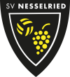
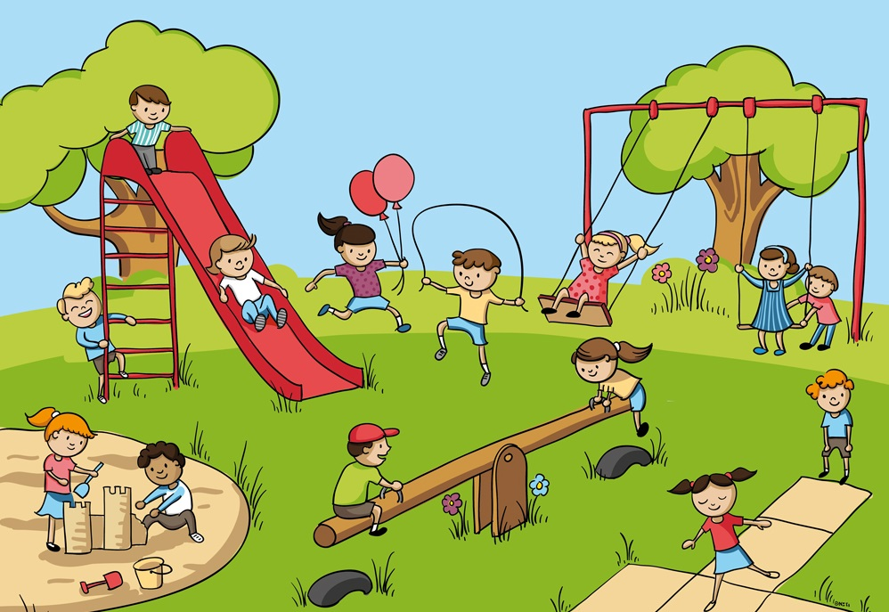

<mat-sidenav-container class="example-container">

  <mat-sidenav opened mode="side" position="end">
    <div style="padding-top: 10px">
      <div *ngFor="let donation of donations" style="padding: 10px 10px 10px 10px">
        <mat-card class="example-card">
          <mat-card-header>
            <mat-card-title style="font-weight: bold">{{donation.name}}</mat-card-title>
          </mat-card-header>
          <mat-card-content>
          <span style="float: inherit; margin-left: 150px">
            Spende:

          <span style="float: right; color: #FFFF00; font-size: large">
            {{donation.betrag | number : '1.2-2':'de'}} €
          </span>
            </span>
          </mat-card-content>
        </mat-card>
      </div>
    </div>
  </mat-sidenav>
  <section>
    <mat-toolbar>
      
      <span style="padding-left: 50px; color: #FFFF00; font-size: x-large"
            class="example-fill-remaining-space">60 Jahre Sportverein Nesselried 1958 e.V.</span>
    </mat-toolbar>

    <mat-card class="example-card" style="margin: 30px 20px 0 200px; align: center">
      <mat-card-header>
        <div mat-card-avatar class="example-header-image"></div>
        <mat-card-title>Kinderspielplatz</mat-card-title>
        <mat-card-subtitle>Spendensammlung</mat-card-subtitle>
      </mat-card-header>
      
      <mat-card-content>
        <span style="text-align:center; font-size: large">Aktueller Spendenstand:</span>
        <p style="text-align:center; margin-top: 20px; color: #FFFF00; font-size: 48px">{{donationValue | number : '1.2-2':'de'}} €</p>
      </mat-card-content>
    </mat-card>
  </section>
</mat-sidenav-container>
